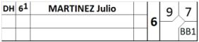

DH goes in defense

In the event that the designated hitter will become a fielder, use the right position column to indicate the fielding position.
There is no need to draw a vertical line, since the player has not changed, only his position. However, the change in defensive position should be indicated by a horizontal line in the opposing team’s score sheet.